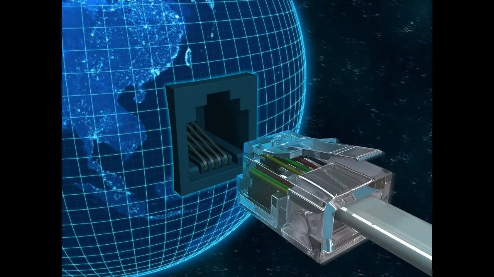
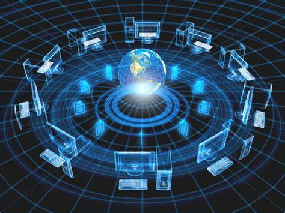
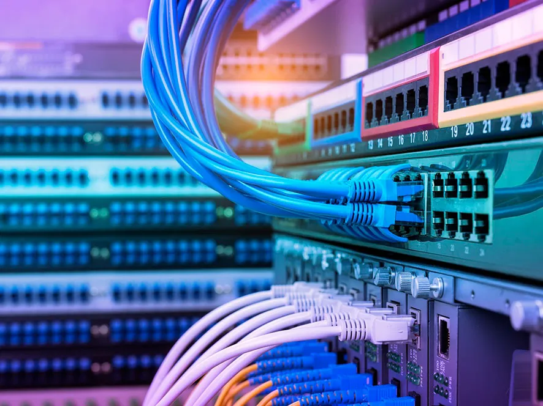
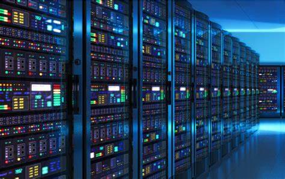

Red de computadoras
¿Qué es una red de computadoras?
Una red informática, una red de comunicaciones de datos o una red de computadoras es la interconexión de distinto número de sistemas informáticos a través de una serie de dispositivos de telecomunicaciones y un medio físico (alámbrico o inalámbrico).
Su función es compartir información en paquetes de datos. Los mismos se transmiten mediante impulsos eléctricos, ondas electromagnéticas u otros medios, empleando una codificación especial. Para ello el sistema traduce a un mismo idioma los procesos de las distintas computadoras, a través de una serie de estándares de comunicación.
Las redes de computadoras no son distintas, en su lógica de intercambio, de otros procesos comunicativos: poseen un emisor, un receptor y un mensaje, un medio a través del cual transmitir el mensaje y una serie de códigos o protocolos para garantizar su correcta comprensión. Solo que, en este caso, quienes envían y reciben mensajes son computadoras.
Al disponer de un número de computadoras en red, podemos crear una comunicación interna entre ellas, que sirve también para compartir puntos de acceso a Internet o la administración de periféricos (como una impresora). Además, permite el rápido envío de datos y archivos sin necesidad de emplear dispositivos de almacenamiento secundario (como discos o pen-drives).
Las redes están presentes hoy en casi todos los ámbitos cotidianos, especialmente en los vinculados con la burocracia o con la administración de recursos. De hecho, la conexión a Internet a la que accedemos desde nuestra computadora, teléfono celular u otros dispositivos, no es otra cosa que una inmensa red de computadoras.

Tipos de redes de computadoras
Comúnmente, las redes de computadoras se clasifican, en primer lugar, conforme a su alcance y tamaño geográfico:
Redes LAN. Su nombre proviene de Local Area Network (en inglés: “Red de Área Local”), pues son las redes de menor tamaño y extensión, como las que pueden existir entre los computadores de un mismo locutorio o cyber café.
Redes MAN.
Su nombre viene de Metropolitan Area Network (en inglés: “Red de Área Metropolitana”) y designa redes de tamaño intermedio, como las empleadas en grandes bibliotecas o grandes empresas, conectando áreas distintas y alejadas geográficamente entre sí.Redes WAN. Llamada así por las siglas de Wide Area Network (en inglés: “Red de Área Amplia”), se trata de redes de gran envergadura y extenso alcance, como puede ser la red global de redes, Internet.
Existen otras posibles clasificaciones de las redes de computadoras, de acuerdo a su topología específica, su relación funcional o direccionalidad de los datos.

Elementos básicos de una red de computadoras
Comúnmente una red informática contiene los siguientes elementos:
Servidor. Las computadoras de una red no poseen la misma jerarquía, ni desempeñan las mismas funciones. Por ejemplo, los servidores son los encargados de procesar el flujo de datos de la red, atendiendo a todas las demás computadoras conectadas (es decir, “sirviéndolos”) y centralizando el control de la red en sí misma.
Clientes o estaciones de trabajo. Estas son las computadoras que no sirven a las demás, sino que forman parte de la red y brindan acceso a la misma, solicitando los recursos administrados por el servidor.
Medios de transmisión. Se refiere al cableado, a las ondas electromagnéticas, o al medio físico que permita la transmisión de la información de la red, sea cual sea.
Elementos de hardware. Todas las piezas tecnológicas que habilitan el establecimiento físico de una red, o sea, que la permiten. Hablamos de tarjetas de red, módems y enrutadores, o antenas repetidoras que extienden la conexión inalámbricamente.
Elementos de software. Similarmente, se requiere de programas para administrar y poner en funcionamiento el hardware de comunicaciones de cada estación de trabajo, lo que incluye el Sistema Operativo de Redes (NOS, del inglés Network Operating System), que además de sostener la operatividad de la red, le brinda servicios de antivirus y firewall; así como los protocolos comunicativos (TCP/IP) que permiten a las máquinas compartir el idioma.

¿Por qué estudiar Redes y Telecomunicaciones?
Al estudiar la carrera obtendrás conocimientos en distintas áreas como ser las tecnologías de la comunicación, los protocolos y estándares de comunicaciones. Además, de desarrollar tus capacidades de gestión y emprendimiento.
Te permitirá diseñar redes locales e infraestructuras de internet a través de la aplicación de herramientas y estándares necesarios.
Si eres una persona que tiene conocimientos de informática, con habilidad para diseñar, organización, aptitud para la gestión de
proyectos y sobre todo si te apasiona la tecnología.
Una vez finalizada la carrera…
El profesional en la carrera de Redes esta capacitado para:
Administrar óptimamente la infraestructura de telecomunicaciones donde se gestiona la información empresarial.
Comprender consignas, desarrollar algoritmos y software multiplataforma.
Gestionar sistema de telefonía móvil
Preparar y evaluar proyectos de planificación y diseñar programas de tecnología moderna.
Gestionar servicios de internet y redes de transmisión de datos.
Aprender nuevas tecnologías y procesos emergentes, de forma pertinente a los requerimiento sociales y empresariales.

Duración de la carrera
La licenciatura de la carrera tiene una duración aproximada de cuatro años. Algunas de las materias a cursar en el transcurso de la carrera son:
Fundamentos de redes
Sistemas operativos
Fundamentos de telecomunicaciones
Seguridad
Programación
Internet de las cosas Lot
Ingeniería de Antenas y Líneas de transformación
Sistemas satelitales
Programación de aplicaciones móviles
Bases de datos
Redes de nueva generación
Gestión de sistemas de telecomunicaciones
